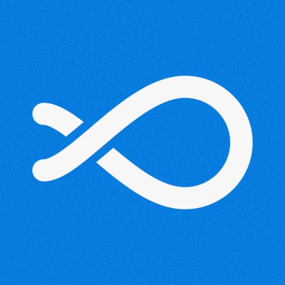

Darwoft
Una operación agrícola que salió de WhatsApp. Nuevos desafíos, automatización e IA como parte del proceso.
La pieza que me llevo
Primera experiencia liderando un proyecto entero con IA, desde su nacimiento hasta la puesta en producción; las nuevas técnicas de toma de requisitos, modelado del sistema, entregas rápidas, feedback y ciclo de vida con IA integrado.
Decenas de miles de leads perdidos, solución en tiempo récord.
La pieza que me llevé
Solución concreta para un problema que afectaba a Claro a nivel regional. Construcción del proyecto solo y resultados visibles al instante, grandes mejoras en las métricas. Reconocimiento de Claro.
Una plataforma para traslados de pacientes. Conductores, recorridos y costos en un mismo lugar, con una app que conecta la calle con la operación.
La pieza que me llevé
Pensar en sistemas, además de pantallas. Mapas, eventos en tiempo real, notificaciones y equipos que necesitan trabajar con la misma información.